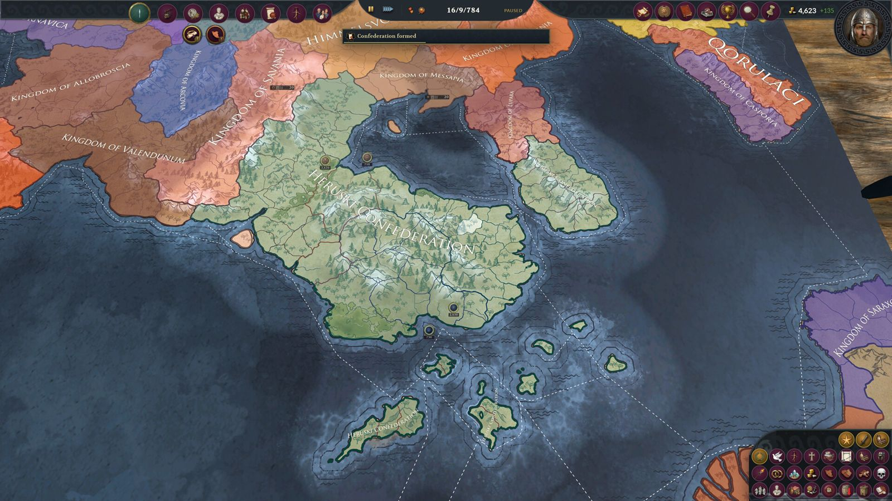

WW2044: Total War
Shape (alt)history in a genre-bending mix of grand strategy, real-time strategy and 4X. Control any nation in a series of fictional scenarios inspired by history. Pick your scenario and your timeline and relive history's events in your own way: drive the Ottoman Empire to its height in a Cold War setting, reunify Germany in a modern, near sci-fi 2044, or rewrite a crisis of your own choosing.
1. Pitch
A turn-based world map where you run a nation, and real-time battles where you fight for it. Every war declared on the map is decided on a battlefield you command directly: build a forward base, gather resources, train and upgrade squads, and take the objective. Win and the map changes; lose and the front moves against you.
| Item | Answer |
|---|---|
| Genre | Grand strategy + 4X campaign layer, RTS battle layer with base building |
| Platform | Browser, static files, keyboard and mouse first (desktop). No install, no server. |
| Player | Strategy players who like both the map-painting campaign and hands-on battles, in short sessions (20–40 minutes per scenario chapter) |
| Setting | The WW2044 universe: alternate timelines from the 1940s to 2044, with familiar mid-century hardware modernised (see the Fallschirmjäger, Sd.Kfz.341 and StG 44 2044 models in this repository) |
| Hook | Pick a nation and a timeline. The same map plays out differently in a Cold War year and in 2044. |
2. Design pillars
- Every battle matters on the map. Battles are not side missions: their result (territory, losses, veterancy) writes straight back to the campaign.
- History as a sandbox. Scenarios start from a recognisable moment, then the player makes the history. No fixed script, only events and pressures.
- Readable at a glance. Few, meaningful numbers. A province, a squad or a building shows its state without opening a panel.
- Small, deep rosters. A handful of unit types per faction, each with a clear upgrade path, rather than dozens of near-identical units.
- Built lean. A static, browser-based game a single developer can grow with AI help on modest plans (see section 11).
3. Core loop
- Campaign turn (1 turn = 1 season): collect income, set research, build in provinces, move armies, make deals.
- Contact: an army moves into a hostile province, or is attacked. Choose to fight (play the RTS battle) or auto-resolve (quick calculation from army strength, terrain and veterancy).
- Battle: deploy from the army's roster, build a forward base, capture resource points, upgrade troops, destroy the enemy HQ or hold the objective until the timer ends.
- Aftermath: survivors keep veterancy, losses are deducted, the province changes hands, events and timeline pressure update.
4. Strategic layer (grand strategy + 4X)
A stylised political map, painted in nation colours on a terrain base, split into provinces. Inspiration: reference 1 (section 12) for the readable, coloured-territory map and the slim top bar of resources and date.
| System | What the player does | Slice scope |
|---|---|---|
| Provinces | Own, build in (1 slot: factory, barracks, depot or radar) and garrison | About 12 provinces in one region |
| Economy | National income from provinces: Treasury (money) and Industry (production points) | Both, per-turn yield shown in the top bar |
| Armies | Recruit, merge, move; each army is a roster of RTS squads and vehicles | Up to 3 armies per side |
| Research | One project at a time on a short tree (infantry, armour, doctrine) | 6 projects that unlock battle upgrades |
| Diplomacy | War, peace, non-aggression, alliance; opinion from events | War and peace only |
| Events and timeline | Scenario events with 2–3 choices that shift stability, money or relations | 5 scripted events in the slice scenario |
| AI | Opponent nations expand, defend and declare war by simple priorities | One opponent AI |
5. Battle layer (RTS)
A top-down 3/4 battlefield in real time with pause. Classic RTS base building and resource management, tuned for short battles (10–20 minutes).
Resources
| Resource | Source | Spent on |
|---|---|---|
| Manpower | Steady trickle from your HQ, more for each captured sector | Infantry squads, reinforcing losses |
| Supply | Supply depots on captured supply points | Buildings, weapons, upgrades |
| Fuel | Fuel points, fewer and contested | Vehicles, armour upgrades, tier unlocks |
The map is divided into sectors. Holding a connected chain of sectors back to your HQ is what makes a resource point pay out, so the front line is the economy.
Base building
- HQ: free, trains engineers, losing it loses the battle.
- Barracks: infantry squads and infantry upgrades.
- Motor pool: light and heavy vehicles (tier 2, needs fuel).
- Depot: built on a resource point to raise its yield; also a reinforcement point.
- Defences: sandbags, wire, MG nest, built by engineers.
Win conditions
Destroy the enemy HQ, or hold more victory points than the enemy when the timer runs out. Attackers and defenders get different starting positions and income, set by the campaign.
6. Troops and upgrades
Squads are the unit of play. Each squad has a role, a loadout and a veterancy level. Inspiration: reference 2 (section 12) for presenting a squad in full 3D with its roster beside it.
| Upgrade type | Where | Example |
|---|---|---|
| Loadout | In battle, at a barracks or near a depot (supply) | Swap rifles for assault rifles; add a rocket launcher; add a light MG |
| Veterancy | Earned in battle, kept on the campaign map | 3 ranks: accuracy, then health, then a squad ability |
| Research unlock | Campaign research | Body armour, smoke grenades, vehicle reactive armour |
| Look | Army screen between battles | Camo sets per season and theatre (winter, desert, urban) |
Slice roster (one faction mirrored with a palette swap for the opponent): engineers, rifle squad, paratrooper squad (Fallschirmjäger model), MG team, anti-tank team, half-track (Sd.Kfz.341 model). Six unit types, each with one loadout upgrade and three veterancy ranks.
7. Scenarios and timelines
A scenario is a start date, a map region, a set of playable nations and a deck of events. The timeline picks the era of technology and the tone: the same region in a different timeline brings different units, research and events.
| Scenario | Timeline | Premise |
|---|---|---|
| Sublime Porte | Cold War (1960s) | The Ottoman Empire never fell. Push it back to its height between two superpower blocs, in the Balkans, the Caucasus and the Levant. |
| Einheit 2044 (slice) | Near future, near sci-fi (2044) | A divided Germany in 2044. Reunify it by diplomacy or by force, with modernised mid-century hardware, drones and powered armour on the horizon. |
| Open slot | Any | Further scenarios follow the same template: one region, 2–4 nations, 10–20 events. |
Scenarios are fiction inspired by history, not reconstructions of it. Nations, leaders and events are invented or alternate versions.
8. Main menu and UI
The main menu reuses the Partisan opener look: a full-screen scene, a thin top bar with small monospace headers, and the menu in the bottom-left corner with one orange call to action. Music toggle bottom-right. The mockup below is drawn in CSS, as a layout target.
Flow: Main menu → Scenario select (scenario, timeline, nation) → Campaign map → Battle → back to the campaign map.
In-game UI
- Campaign map: the same thin top bar (nation, date and turn, Treasury, Industry, research), end-turn button bottom-right, province panel bottom-left.
- Battle: top bar with Manpower, Supply, Fuel and the battle timer; selected squad card and build menu bottom-left; minimap bottom-right.
- Same palette and type as the Partisan opener: near-black background, off-white text, grey-blue secondary text, orange accent for the one action that matters.
9. Art and music direction
Art
Painted political map for the campaign: muted terrain, strong nation colours, hand-lettered province names. Battles in a top-down 3/4 view with readable silhouettes, reusing the WW2044 models (low-poly, baked into sprites or rendered with three.js; decided in the tech spike). Modernised mid-century hardware: 1940s shapes, 2040s kit.
Music
An original score in the spirit of late-1990s RTS soundtracks: driving industrial rock and electronic marches, heavy synth bass, chugging guitars, militaristic snares and sampled radio chatter. Tense ambient beds on the campaign map, high-energy tracks in battle, a stinger for victory and defeat. All music is composed or generated for this game; no existing tracks or melodies are used.
Sound
Short, punchy unit responses ("Moving out", "Contact front"), radio-filtered. A shared sound layer keeps menu music playing across screens, as in Partisan.
10. Vertical slice scope
The slice proves both layers and the link between them, in one scenario. Everything else waits.
| In the slice | Not in the slice |
|---|---|
| Main menu, scenario select (one scenario, one timeline, two nations) | More scenarios and timelines |
| Campaign map: 12 provinces, 2 resources, 3 armies a side, 6 research projects, 5 events, war and peace | Full diplomacy, trade, espionage, multiple AIs |
| One battle map with sectors, 3 resources, 4 building types, 6 unit types, loadout upgrades, 3 veterancy ranks | Naval and air battles, more maps, multiplayer |
| Auto-resolve as an alternative to fighting | Save files beyond one browser autosave |
| Basic enemy AI on both layers | Difficulty levels, modding |
| 2 music tracks (menu/map, battle) and a basic sound set | Voice acting, full soundtrack |
Milestones
- M0, this document. Scope agreed.
- M1, battle prototype. One battle map, select and move squads, capture sectors, resources tick, one building, one unit.
- M2, base and upgrades. All 4 buildings, 6 units, loadouts, veterancy, enemy AI, win and loss.
- M3, campaign map. Provinces, turns, income, armies, research, events, auto-resolve.
- M4, link and polish. Map → battle → map with results carried over, main menu, music, deploy to vincentdenil.com/projects/.
11. Tech and budget
- Static and buildless. Plain HTML, CSS and JavaScript modules, served as files. No framework, no bundler for game code. Libraries (three.js, if used) load from a pinned CDN version, as Partisan does.
- Rendering. Canvas 2D for the campaign map and battle by default; three.js only if the M1 spike shows sprites are not enough.
- Data-driven. Units, buildings, research, provinces and events live in small JSON or JS data files, so balancing is an edit to data, not to code.
- Repositories. Source in
vdn-ww2044underprojects/total-war/. Releases are copied as a static folder tovincentdenil-siteunder/projects/ww2044-total-war/, link-only andnoindex. - Budget. Built on a $20 Claude plan and a $20 ChatGPT plan. Keep each task small (one system or one screen per pull request), keep files short so they fit in context, reuse existing WW2044 models and Partisan styles, and prefer data edits over code rewrites. Use one assistant for code and the other for review, naming, event writing and concept images.
12. Inspiration references
Mood and readability references only, with rights cleared by Vincent De Nil on 25 November 2026. WW2044: Total War is an original game: its map, art, UI, names and music are its own, and nothing below is to be copied.

Credit: in-game screenshot from a third-party grand strategy game, © its developer and publisher. Supplied by Vincent De Nil as an inspiration reference; rights cleared 25 November 2026.

Credit: in-game screenshot from a third-party WW2 real-time strategy game, © its developer and publisher. Supplied by Vincent De Nil as an inspiration reference; rights cleared 25 November 2026.
13. Open decisions
| Decision | Options | Proposed |
|---|---|---|
| Battle rendering | Canvas 2D sprites / three.js 3D | Canvas 2D, decide after the M1 spike |
| Campaign time | Turn-based seasons / real-time with pause | Turn-based seasons (simpler AI, clear battle hand-off) |
| Slice scenario | Einheit 2044 / Sublime Porte | Einheit 2044 (fits the existing WW2044 models) |
| Music source | Composed / AI-generated / licensed library | AI-generated or composed original tracks, rights checked before release |